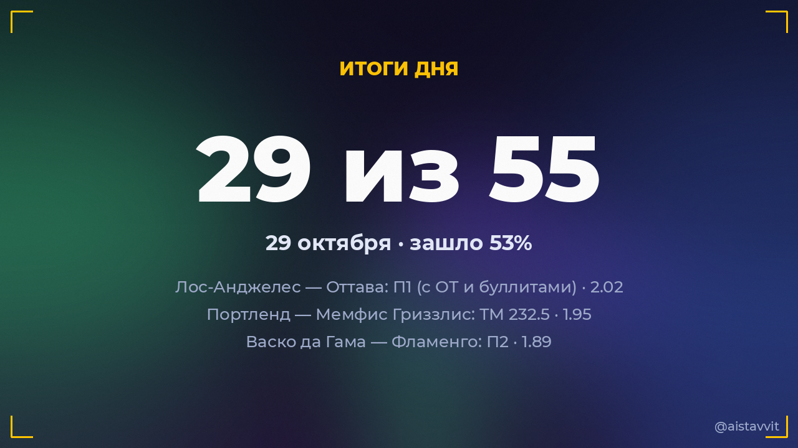

Итоги дня — 29 октября 2026
Зашло 29 из 55 основных прогнозов (53%), ROI дня -12.2%. Каждый прогноз учтён — и заходы, и промахи.

Все прогнозы дня
🎾 Миа Поганкова — Алисия Паркс
Будет 2 сета · 1.662:0 ✅
Будет 2 сета · 1.662:0 ✅
🎾 Камилла Рахимова — Майя Джойнт
Победа: Камилла Рахимова · 1.622:1 ✅
Победа: Камилла Рахимова · 1.622:1 ✅
🎾 Дилетта Черубини — Бьянка Андрееску
Будет 2 сета · 1.650:2 ✅
Будет 2 сета · 1.650:2 ✅
⚽ Васко да Гама — Фламенго
П2 · 1.891:4 ✅
П2 · 1.891:4 ✅
🏒 Детройт — Чикаго
П1 (с ОТ и буллитами) · 1.624:1 ✅
П1 (с ОТ и буллитами) · 1.624:1 ✅
🎾 Татьяна Мария — Мартина Колмегна
Будет 2 сета · 1.552:0 ✅
Будет 2 сета · 1.552:0 ✅
⚽ Фиорентина — Аталанта
ТБ 2.5 · 1.592:2 ✅
ТБ 2.5 · 1.592:2 ✅
🏀 Атланта Хокс — Кливленд
П1 (с ОТ) · 1.85114:111 ✅
П1 (с ОТ) · 1.85114:111 ✅
🎾 Надя Подорошка — Мириам Булгару
Будет 2 сета · 1.672:0 ✅
Будет 2 сета · 1.672:0 ✅
🎾 Джил Тайхманн — Зейнеп Сёнмез
Победа: Жил Теичманн · 1.422:1 ✅
Победа: Жил Теичманн · 1.422:1 ✅
🎾 Мария Лурдес Карле — Юлия Грабер
Будет 2 сета · 1.660:2 ✅
Будет 2 сета · 1.660:2 ✅
⚽ Ан-Наср — Аль-Холуд
Ф1 (−1.5) · 1.545:3 ✅
Ф1 (−1.5) · 1.545:3 ✅
🏒 Сент-Луис — Бостон
П1 (с ОТ и буллитами) · 1.874:1 ✅
П1 (с ОТ и буллитами) · 1.874:1 ✅
⚽ Фрозиноне — Лечче
П1 · 1.665:1 ✅
П1 · 1.665:1 ✅
🎾 Александр Зверев — Таллон Грикспор
Будет 2 сета · 1.502:0 ✅
Будет 2 сета · 1.502:0 ✅
🎾 Тейлор Фриц — Денис Шаповалов
Будет 2 сета · 1.782:0 ✅
Будет 2 сета · 1.782:0 ✅
🏀 Атланта Дрим — Голден Стэйт Валкириз
П1 (с ОТ) · 1.5280:69 ✅
П1 (с ОТ) · 1.5280:69 ✅
🎾 Николоз Басилашвили — Карлос Алькарас
Будет 2 сета · 1.520:2 ✅
Будет 2 сета · 1.520:2 ✅
🎾 Марина Бассольс Рибера — Эрика Андреева
Будет 2 сета · 1.852:0 ✅
Будет 2 сета · 1.852:0 ✅
🎾 Наоми Осака — Миа Поганкова
Будет 2 сета · 1.630:2 ✅
Будет 2 сета · 1.630:2 ✅
🎾 Елена Рыбакина — Юлия Путинцева
Победа: Елена Рибакина · 1.022:0 ✅
Победа: Елена Рибакина · 1.022:0 ✅
🏒 Лос-Анджелес — Оттава
П1 (с ОТ и буллитами) · 2.026:5 ✅
П1 (с ОТ и буллитами) · 2.026:5 ✅
🎾 Анна Бондар — Кейтлин Кеведо
Победа: Каитлин Квеведо · 1.550:2 ✅
Победа: Каитлин Квеведо · 1.550:2 ✅
🎾 Томми Пол — Лучано Дардери
Будет 2 сета · 1.712:0 ✅
Будет 2 сета · 1.712:0 ✅
🎾 Лилли Таггер — Магда Линетт
Будет 2 сета · 1.792:0 ✅
Будет 2 сета · 1.792:0 ✅
🏒 Питтсбург — Юта
ТБ 6.5 · 1.743:4 ✅
ТБ 6.5 · 1.743:4 ✅
🎾 Хулия Риера — Ясмине Каббаж
Будет 2 сета · 1.852:0 ✅
Будет 2 сета · 1.852:0 ✅
🏀 Портленд — Мемфис Гриззлис
ТМ 232.5 · 1.95103:124 ✅
ТМ 232.5 · 1.95103:124 ✅
🎾 Сузан Бандекки — Эльза Жакмо
Эльза Жакмо возьмёт хотя бы сет · 1.591:2 ✅
Эльза Жакмо возьмёт хотя бы сет · 1.591:2 ✅
🏒 Даллас — Монреаль
П1 (с ОТ и буллитами) · 1.572:5 ❌
П1 (с ОТ и буллитами) · 1.572:5 ❌
🏒 Нэшвилл — Вашингтон
ТМ 6.5 · 1.873:4 ❌
ТМ 6.5 · 1.873:4 ❌
🏒 Анахайм — Баффало
ТМ 6.5 · 2.056:7 ❌
ТМ 6.5 · 2.056:7 ❌
🏒 Сан-Хосе — Ванкувер
ТБ 6.5 · 1.743:2 ❌
ТБ 6.5 · 1.743:2 ❌
⚽ Гремио — Атлетико Паранаэнсе
Обе забьют — да · 1.692:0 ❌
Обе забьют — да · 1.692:0 ❌
🏀 Нью-Орлеан Пеликанс — Сакраменто Кингз
Ф1 (-6.5) · 1.93132:120 ❌
Ф1 (-6.5) · 1.93132:120 ❌
🏒 Миннесота — Айлендерс
П1 (с ОТ и буллитами) · 1.523:4 ❌
П1 (с ОТ и буллитами) · 1.523:4 ❌
🏒 Тампа-Бэй — Виннипег
ТМ 6.5 · 1.746:4 ❌
ТМ 6.5 · 1.746:4 ❌
🎾 Тамара Зиданшек — Алисиа Херреро Линана
Будет 2 сета · 1.861:2 ❌
Будет 2 сета · 1.861:2 ❌
⚽ Америка Минейро — Тихуана
ИТ1 больше 1.5 · 1.381:1 ❌
ИТ1 больше 1.5 · 1.381:1 ❌
🏒 Каролина — Коламбус
ТБ 5.5 · 1.743:2 ❌
ТБ 5.5 · 1.743:2 ❌
⚽ Атлетико Минейро — Крузейро
Обе забьют — да · 1.600:1 ❌
Обе забьют — да · 1.600:1 ❌
🎾 Полона Херцог — Валерия Страхова
Будет 2 сета · 1.611:2 ❌
Будет 2 сета · 1.611:2 ❌
⚽ Эвертон — Ньюкасл
X2 · 1.623:1 ❌
X2 · 1.623:1 ❌
🎾 Мартина Кубка — Лиса Пигато
Победа: Лиса Пигато · 1.582:0 ❌
Победа: Лиса Пигато · 1.582:0 ❌
🎾 Анна Блинкова — Катарина Завацкая
Будет 2 сета · 1.772:1 ❌
Будет 2 сета · 1.772:1 ❌
⚽ Эр-Рияд — Аль-Кадисия
Ф1 (+1.5) · 1.950:6 ❌
Ф1 (+1.5) · 1.950:6 ❌
🎾 Артур Фери — Лоренцо Музетти
Будет 2 сета · 1.662:1 ❌
Будет 2 сета · 1.662:1 ❌
🎾 Даниэль Альтмайер — Иржи Леxечка
Даниэль Альтмайер возьмёт хотя бы сет · 1.540:2 ❌
Даниэль Альтмайер возьмёт хотя бы сет · 1.540:2 ❌
🎾 Лукреция Стефанини — Эйла Аксу
Будет 2 сета · 1.861:2 ❌
Будет 2 сета · 1.861:2 ❌
⚽ Аль-Халидж — Аль-Хазм
X2 · 1.774:2 ❌
X2 · 1.774:2 ❌
🎾 Алекс Микельсен — Артур Филс
Будет 2 сета · 1.771:2 ❌
Будет 2 сета · 1.771:2 ❌
🎾 Кэмерон Норри — Даниил Медведев
Будет 2 сета · 1.521:2 ❌
Будет 2 сета · 1.521:2 ❌
🎾 Валантен Вашро — Рафаэль Ходар
Будет 2 сета · 1.632:1 ❌
Будет 2 сета · 1.632:1 ❌
🎾 Мария Тимофеева — Ксинран Сун
Победа: Мариа Тимофива · 1.441:2 ❌
Победа: Мариа Тимофива · 1.441:2 ❌
🎾 Новак Джокович — Ян-Леннард Штруфф
Будет 2 сета · 1.711:2 ❌
Будет 2 сета · 1.711:2 ❌
← предыдущий день · следующий день → · статистика бота · прогнозы на сегодня · Telegram-канал